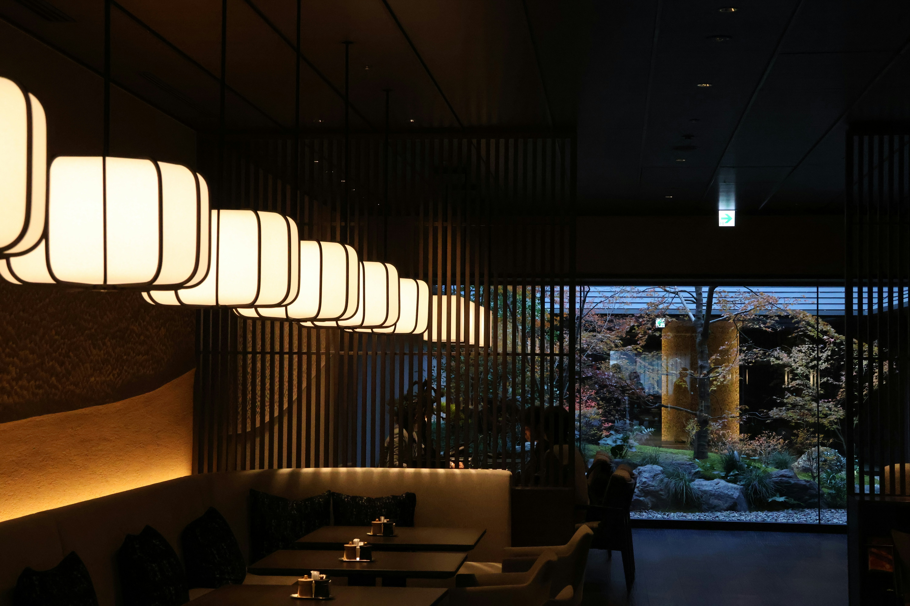
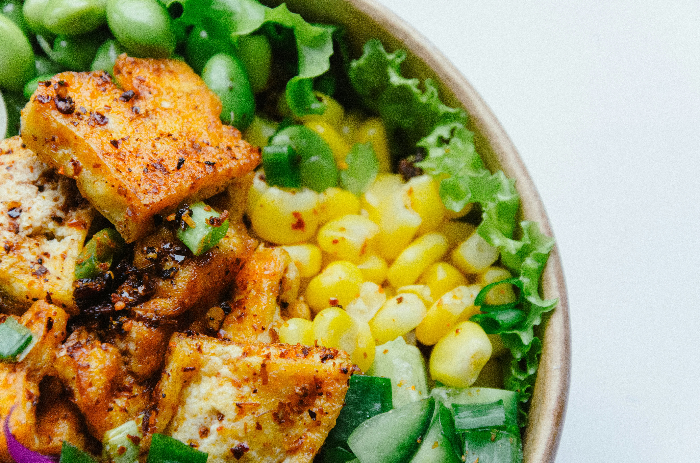
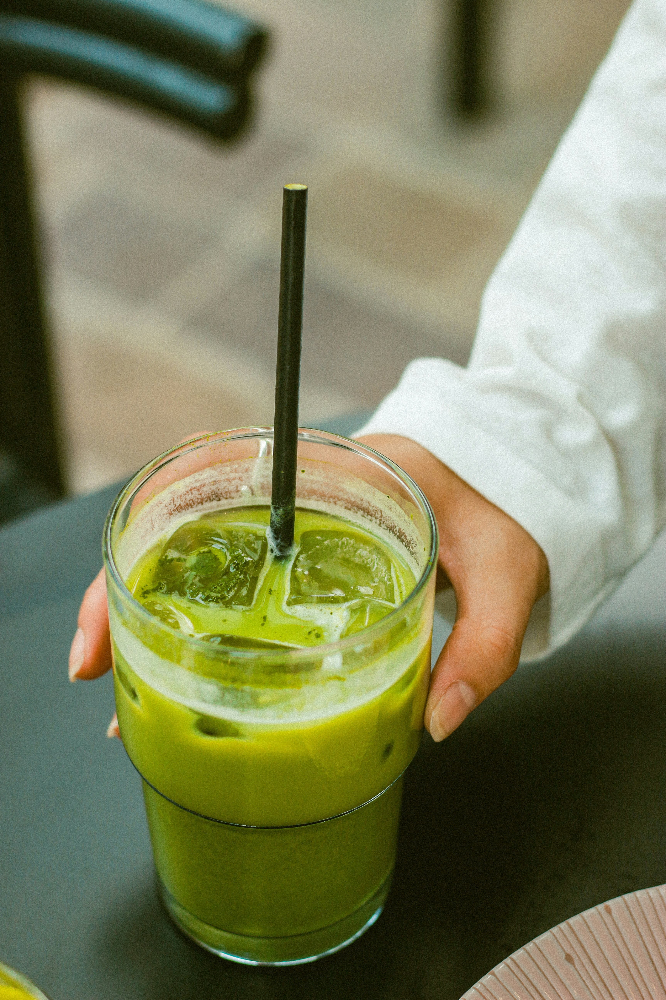
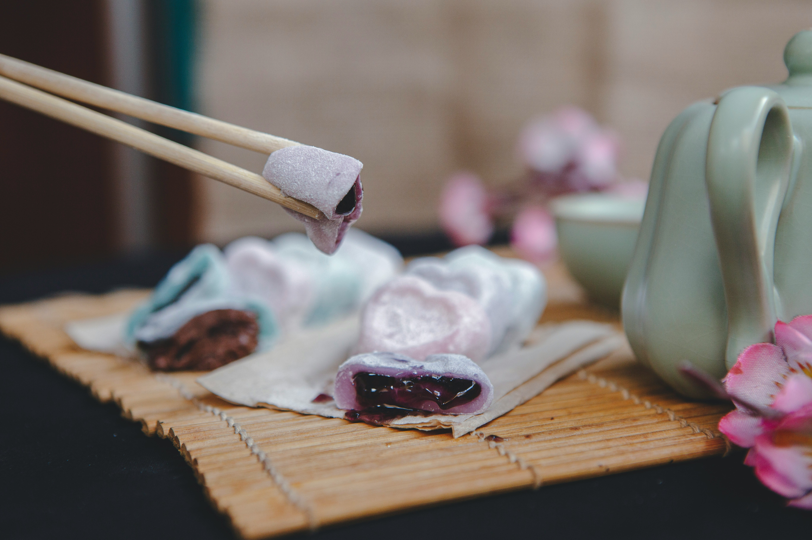
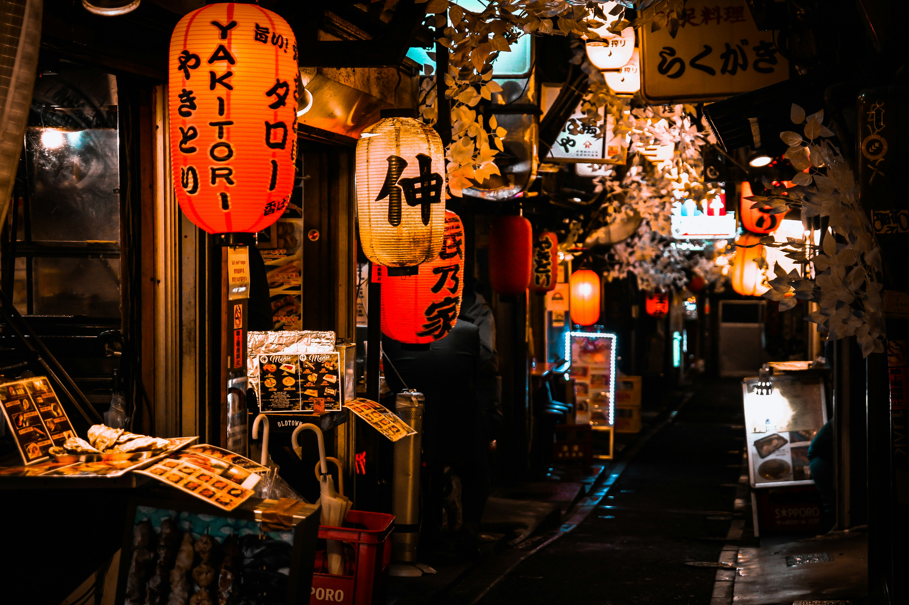
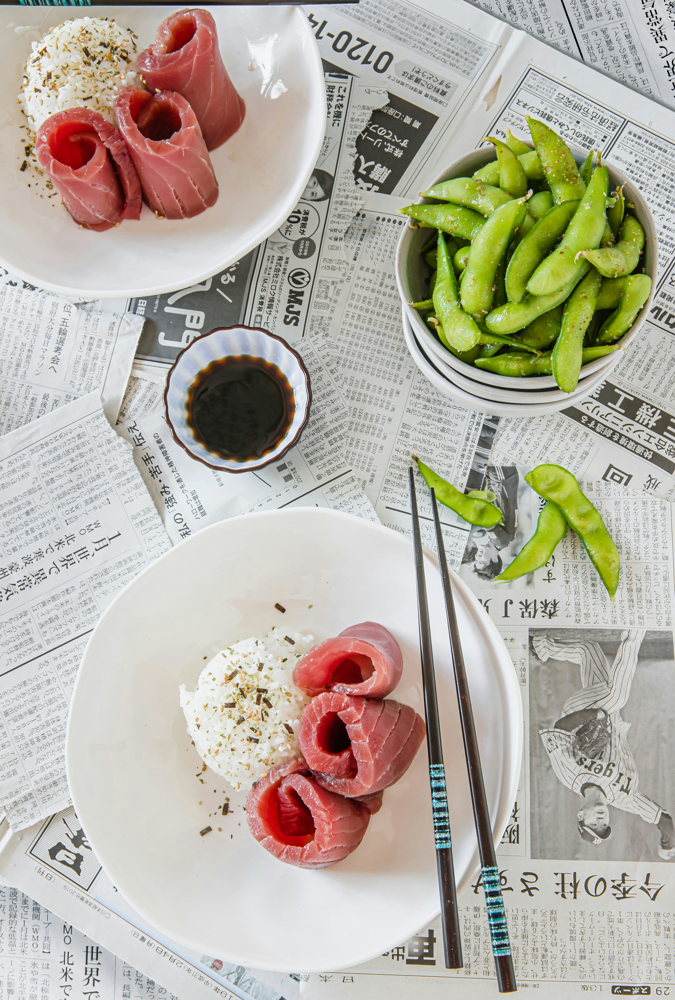

Маленькое японское кафе в Саратове
«Тофу» — это маленькое, но очень уютное кафе на набережной Космонавтов, где вегетарианская кухня встречается с японской эстетикой.
Мы открылись в 2024 году с простой идеей: показать, что еда без мяса может быть вкусной, сытной и разнообразной. В нашем меню — закуски, салаты, выпечка и напитки, приготовленные из свежих овощей, бобовых и тофу. Мы не используем продукты животного происхождения и стараемся работать с местными поставщиками.
Интерьер кафе выполнен в тёмных тонах с красными акцентами — отсылка к традиционной японской эстетике. Деревянные текстуры, мягкий свет и негромкая музыка создают атмосферу, в которую хочется возвращаться.
Никаких продуктов животного происхождения — ни в блюдах, ни в напитках.
Работаем с местными поставщиками и готовим небольшими партиями.
Маленький зал, тёплый свет и внимание к каждому гостю.





